주관적인 특성이 매우 뚜렷한 색상으로, 사진을 이용한 광고나 포스터가 아니라면 명확한 콘셉트가 있게 사용하는 것이 좋다. 고급스런 느낌과 차가운 계열의 색상을 조합하여 바탕으로 사용할 때 신비로운 느낌을 줄 수 있다.
1. 색의 성격오랜 시간 만들어진 색상이 가지고 있는 성격 : 풍부한 감수성, 섬세, 소극적, 지관, 에술가, 기질, 신경질, 자만 2. 색의 영향사람이 인지했을 때 느낌 : 신비, 창조, 예술, 고귀, 지적, 성취, 불안, 공포, 외로움 3. 색의 처방색상을 의도적으로 활용할 수 있는 방법 : 식욕 억제, 감성 자극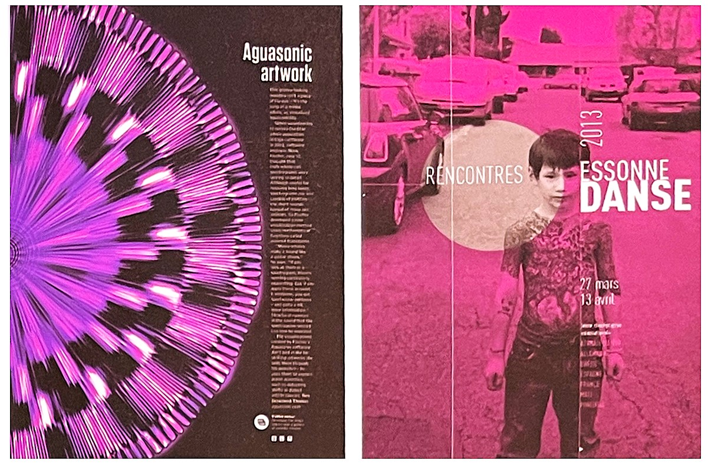
* 독특한 방사형 무늬와 보라색이 주는 조합으로 신비로움을 이끌어 내고 주목성을 높였다.
** 보라색이 주는 불안한 느낌이 사진 주제와 잘 어울리게 사용되었다.
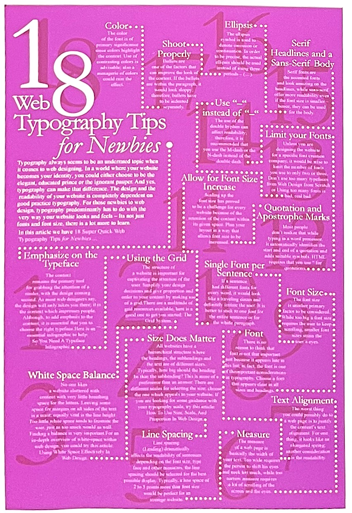*** 보라색이 주는 미묘한 느낌은 혼돈스러움을 알리는 디자인을 표현할 때 어울린다.
보라색의 상징[5]긍정적 감정과 상징: 왕실, 왕족, 고귀함, 상위계급, 우정, 열정, 나눔, 지혜, 참회, 동정, 극도, 교양, 새련 부정적 감정과 상징: 독약, 격정, 분노, 동성애> 연상되는 자연/자연물: 팬시꽃 정치.종교적 상징: 제국주의, 부활절, 사순절, 교회 주교
보라색을 의미하는 violet은 파랑과 빨강 사이에 있는 색으로 자주 혼용하는 purple과 비교하여 푸른빛의 자주bluish purple과 동의어이다. 생상환에서 보면 바이올렛은 파랑에 더 가까운 색이고, 반면 퍼플은 바이올렛 계열에서 좀더 빨강이 더해진 색으로 사용한다.
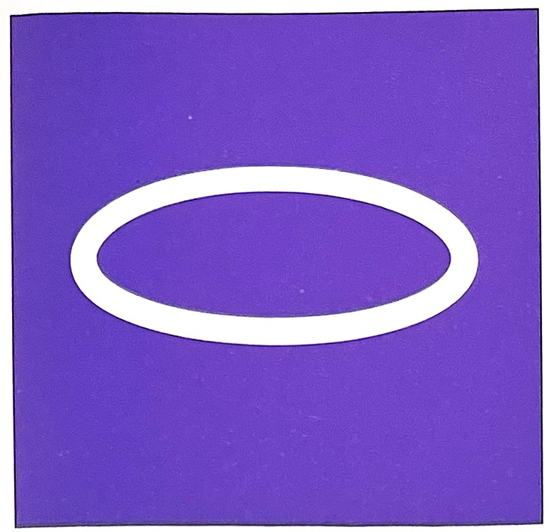보라색의 심볼타원[5]
보라색(Purple)보라를 거부하는 사람들은 무엇인가를 향해 나아가는 척할 뿐이다. 사실은 전진하는 게 아니고 오직 휴식을 취할 수 있는 기회만 찾는다. 괴테Johann Wolfgang von Goethe의 '색채론'에서
이보다 더 말할 수 없이 좋은 색이 있을 까? 자줏빛은 저절로 글쓰기를 유도하는 색상이다.
자주색은 고귀함을 대변한다. 이색은 실제로 수세기 동안 귀족과 연관되었는데 거기에는 그럴듯한 이유가 있다. 자연환경이 제공하는 색만으로는 천을 자줏빛으로 염색하기가 어려웠다. 역사적으로 이 염료는 가장 독성이 강하고 시간과 노력이 많이 들며 값비싼 공정을 거쳐야 하는 제품 중 하나였다. 왕의 에복과 성직자가 어깨에 두르는 스톨외에는 겨우 부자들만 감당할 수 있을 정도랄까. 다라서 보라색을 입은 이들은 분명 대단한 사람이었다. 궁전에서 보라색을 입은 사람은 전혀 움츠러들 필요가 없었다.
누구는 자주색, 누구는 보라색, 일상생활에서 자주색과 보라색은 흔히 혼용된다. 하지만 엄밀한 색상의 세게에서 자주색과 보라색은 하나가 될 수 없으며 서로 같지도 않다.
자주색은 청색광과 적색광의 혼합물이 아니다. 그것은 보라색으로, 가시광선 형식의 파장에 해당하는 스펙트럼 색이자 인간에게 초단파로 표시된다. 이 색은 스펙트럼에서 가장 긴 파장을 자랑하는 빨간색 가시 스펙트럼의 반대쪽 끝에 위치한다. 빨강은 스펙트럼의 한쪽 끝에 있고 보라색은 반대쪽 끝에 있으므로 서로 이웃하지 않으므로 이 두색은 섞일 수 없다.
색채 척도에서 보라[7]고대에 보라색이 차지하고 있던 막대한 위상에는 의문의 여지가 너무 많기 때문에 그것에서부터 논의를 시작하기는 어렵다. 그러나 비드Bede가 보라색 자수정을 천국의 상징으로 묘사한 것과 그가 고대의 전례를 따랐다는 것에는 주목할 필요가 있다.
고대와 중세에서 보라색의 위치가 색채 척도에서 가장 밝은 부분에 위치하고 있었다는 것이다. 주석가인 테오푸라스투스 Theophrastus에 따르면 데모크리토스Democritus 는 보라색porphurios을 흰색, 검은색, 빨강색이 혼합된 것으로 언급하였다. 그는 빨강색이 가장 많은 부분을 구성하며 검은색이 가장 적은 부분을 구성하고 흰색이 그 중간 정도를 차지한다고 보았다. '검은색과 빨강색이 들어 있더는 것은 눈에 분명히 보인다. 광택phaneron과 반짝거림lampron은 흰색의 효과이므로 흰색이 들어 있음을 증명한다.'
플리니Pliny와 필로스트라토스Phlostratus는 염료로서 이 색의 아름다움이 표면 광택에서 비롯된 것이라 보았는데, 필로스트라토스는 그의 책 '상상Imagines'에서 이 색에 대해 '어둡게 보이지만 태양으로부터 온 특별한 아름다움을 가지고 있고 태양의 따뜻한 밝기가 스며있다'고 묘사하였다. '자연사Natural History'에서 나타난 플리니의 설명은 가장 풍부하고도 흥미로운 대목이다. 그는 뿔고둥murex 으로부터 만들어진 티리언 퍼플the tyrian purple색에 대해 '이 색은 모든 옷을 밝게 만든다'고 기술했다. 그리고 그는 순수한 빨강색은 검은색을 가미한 색보다 하위에 있다고 주장했지만, 후에 이러한 검은색다움이 어떻게 얻어지는지를 자세히 설명했다.
그의 설명에 의하면, 염료 물질을 만들어내는 작은 물레고둥과 뿔고둥이라는 두 종류의 바다고둥의 차이점은 다음과 같다. 물레고둥buccine에서 나오는 염료는 빨리 색으로 나타나지 않았기 때문에 그 자체로 사용하기는 적합하지 않은 것으로 간주되었지만, 뿔고둥pelagian에 의해서 완벽하게 보완될 수 있었다. 티리언 색은 반사광에서는 어둡고, 전도된 빛에서는 밝은 색일 때 가장 적합한 색을 얻을 수 있다. 후에 이어지는 글에서 풀리니는 더 창백한 색조의 보라색이 그 당시에 매우 유행했었다고 언급했다.
3세기 후반에서 4세기 초반의 스톡홀름 파피루스Stockholm Papyrus 에는 광택을 의미하는 다른 보라색 염료들과 함께 염색을 하는 세 가지 비법이 있었다.
그중 하나는 '비밀을 지켜라, 보라색은 지극히 아름다운 광택을 갖고 있기 때문이다'라는 서문이 쓰여 있다. 이노니무스 베르넨시스라는 에그 템페라egg tempera화법에 대해 논했던 한 장인은 18세기 후반 그가 조제한 물질에 붉은색이 돌도록 광택을 주었으며 그 결과 '거의 가장 훌륭한 보라색'의 효과에 근접할 수 있었다고 주장했다.
이와 같이 보라색을 붉은색과 연관시키는것곳, 그리고 빛과 연결시키는 것은 이 색에 대한 중새 초기의 관념에 뿌리를 두고 있다. 이는 카롤링거 시대의 불타는 빨강과 분홍의 주목할 만한 범위 내의 색으로 해석할 수 있는 호화로운 보라색 고문서에서 찾아볼 수 있다. (예를 들면 아브빌의 첸툴라 복음서와 비엔나의 대관식 복음서)
티리언 퍼플 색 만들기[1]고대 그리스인들은 페니키아의 신 멜카르트[Melqurt]가 아름다운 터리언 퍼플 염료를 제공한다고 믿었다. 신화의 내용은 이렇다. 멜카르트는 자신의 강아지가 바닷가에서 조개를 핥고 있는 것을 보았다. 놀라서 보니 강아지의 입이 자줏빛으로 변해 있었다. 멜카르트의 정령 타이러스는 그 아람다운 색을 보더니 멜카르트에게 그처럼 아름다운 것을 달라고 요구했다. 이에 멜카르트는 조개를 모아 염료를 만든 다음 이것으로 비단을 염색하여 타이러스에게 건네주었다. 이 님프의 이름 또는 그녀가 살던 페니키아 항구 도시 티레Tyre의 이름을 딴 티리언 퍼플 신화는 기원전 1600년부터 문서에 언급되었다.
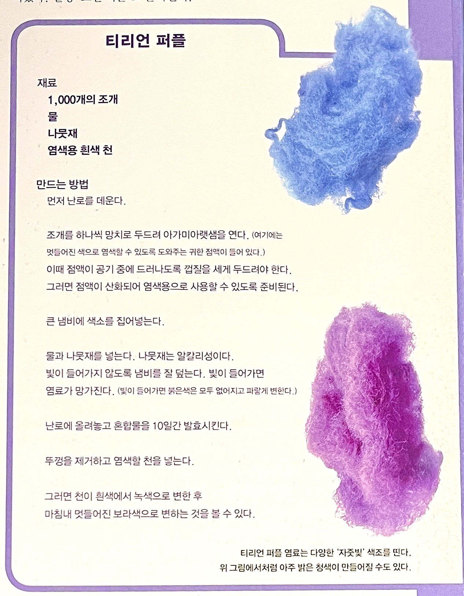티리언 퍼플 염료는 다양한 '자줏빛'을 띤다. 위 그림에서처럼 아주 밝은 청색이 만들어질 수도 있다.
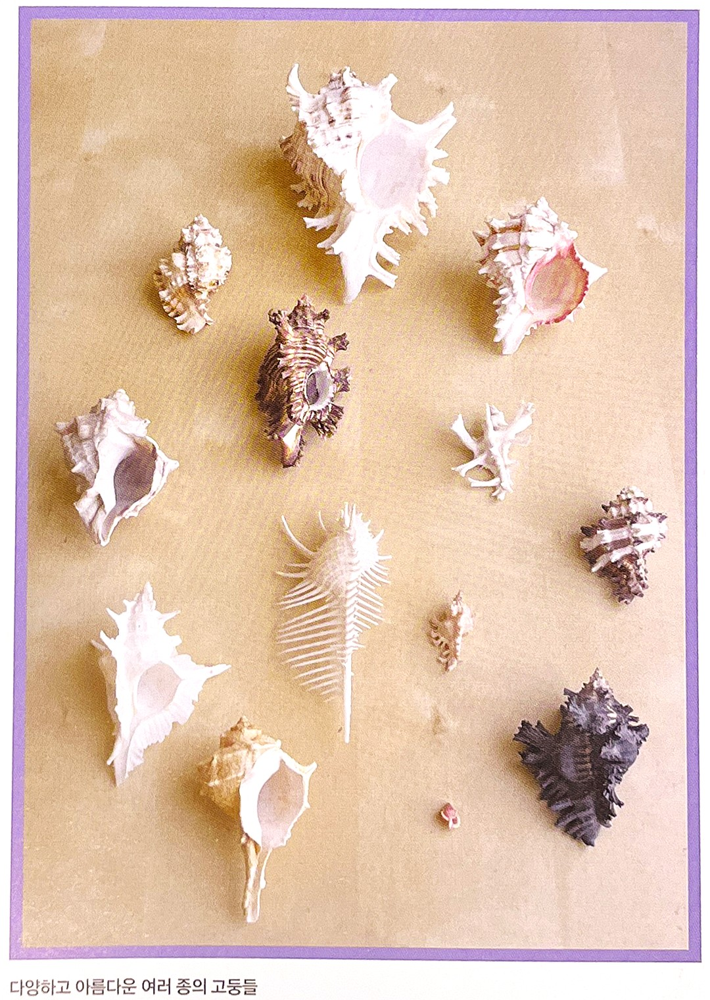다양하고 아름다운 여러 종의 고둥들 하지만 안타깝게도 이 제조법을 사용하면 천 개의 조개로 겨우 망토 하나를 염색할 수 있을 뿐이다. 28그램의 터리언 퍼플 염료를 만들려면 대략 25만개의 조개가 필요하다.
연보라색의 연금술[1]1856년 영국의 화학자 윌리엄 퍼킨William Perkin은 아닐린이라는 유기화합물로 연보라색 염료를 만들었다. 값비싸면서도 쉽게 바래는 천연염료에 의존하던 세계에서 이 새로운 염료는 획기적인 것이었다. 이 후 수십년 만에 아닐린으로 만든 새로운 염료가 2천 개가 넘는 합성염료를 만드는 계기가 되었다. 그리하여 수세기 동안 상대적으로 값비싸고 제조가 어려웠던 천연염료를 대체하기 시작했다.
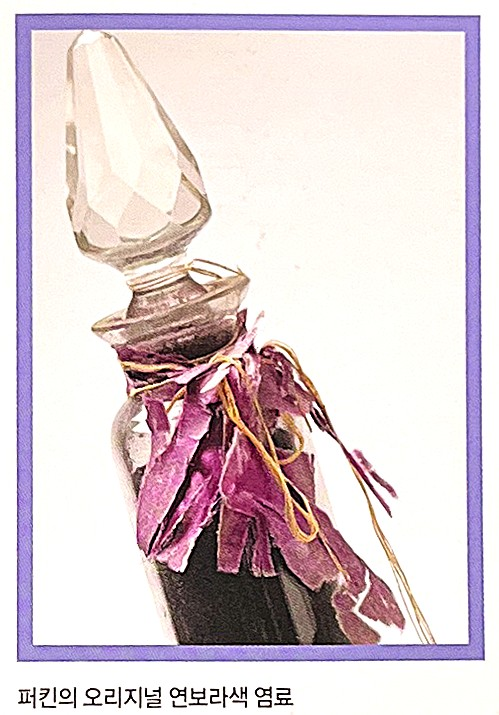퍼킨의 오리지널 연보라색 염료
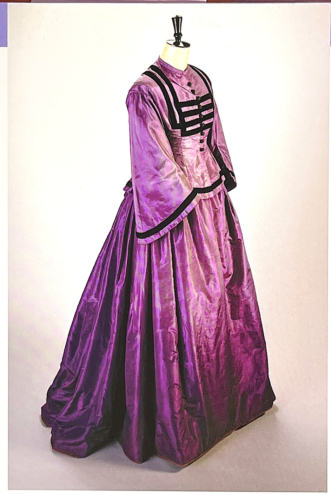퍼킨의 연보라색 염료로 염색한 드레스
자외선 효과[1]자외선이 실제로 보라색 형식을 띠는 것은 아니며 그 파장은 X선 사이의 어디쯤에 놓여 있다. 비록 많은 새와 곤충들 눈에 보이는 것처럼 인간의 눈에는 보이지 않지만 자외선은 우리의 삶에 중요한 역할을 수행한다.
우리를 비추는 햇빛에는 자외선이 들어 있는데, 이러한 자외선이 우리 몸에 흡수되어 DNA를 파괴한다. 특히 피부색이 연한 사람들의 경우 자외선에 민감하여 피부암이 발생할 수도 있다. 아프리카와 같이 태양이 풍부한 국가에 사는 사람들은 진화를 통해 멜라닌 색소를 발달시켜 왔으며 이때 멜라닌은 자외선을 오히려 무해한 열로 바꿔 놓는다. 피부색과 무관하게 사람들은 자외선 노출에 대비하여 선탠을 개발했는데 이 방법은 일시적으로 멜라닌 색소를 증가시켜 태양광선이 피부 세포에 초래한 피해를 완화시킨다.
하지만 자외선은 비타민 D의 생성을 도와 건강상의 이점을 제공하는데, 비타민 D는 인간의 뼈와 면역체계를 강화하고 장수할 수 있도록 도와준다.
그 외에도 자외선이 주는 또 다른 혜택이 있다. 특별히 적외선이나 자외선과 같은 불가시광선에서 발견되는 유용한 혜택으로 자외선과 소량의 자주색 가시광산을 방출하는 것이다. 1970년대를 회상해 보면 평범한 백열등이나 형광등을 모두 끈 채 불가시광선에 노출되었을 때만 근사하게 빛나는 포스터가 유독 많았던 것을 기억할 것이다. 클럽이나 콘서트에 가서 손에 '보이지 않는' 잉크를 받아 본 사람이라면 이런 불빛에 대해 잘 알고 있을 것이다. 경비원이 불가시광선을 밝히면 갑자기 스탬프가 나타난다. 이러한 불가시광선은 낮에도 이용되었다. 광선을 이와 비슷한 방식으로 응용하면 다양한 질병을 알아낼 수도 있다. 여기에는 백선(전염성 피부염), 옴, 탈모증을 비롯하여 여러 피부 질환이 포함된다.
과학 수사 부문에서는 일종의 스타라고 할 수 있다. 예술품 감정자는 불가시광선을 활용하여 작품이 그 시대 그 작가의 것이 맞는지, 아니면 모조품인지 여부를 식별한다. 지폐를 감별할 때도 사용된다. 100달러짜리 지폐에 광선을 비추면 위조지폐를 찾아낼 수 있다. 범죄 현장에서는 피를 감지하는데 사용된다. 집안 전체에서 소변을 감지하는 데도 이용될 수 있다.
퍼킨의 오리지널 연보라색 염료 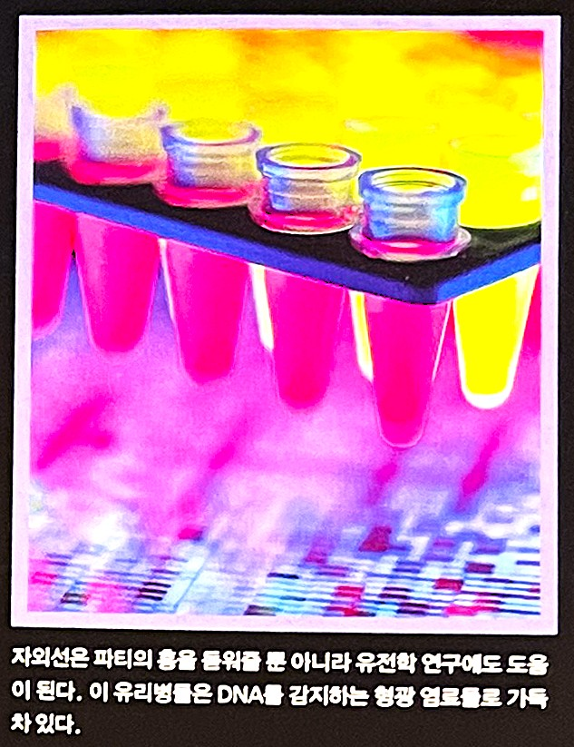자외선은 파티의 흥을 돋워줄 뿐아니라 유전학 연구에도 도움이 된다. 이 유리병들은 DNA를 감지하는 형광 염료들로 가득 차 있다.
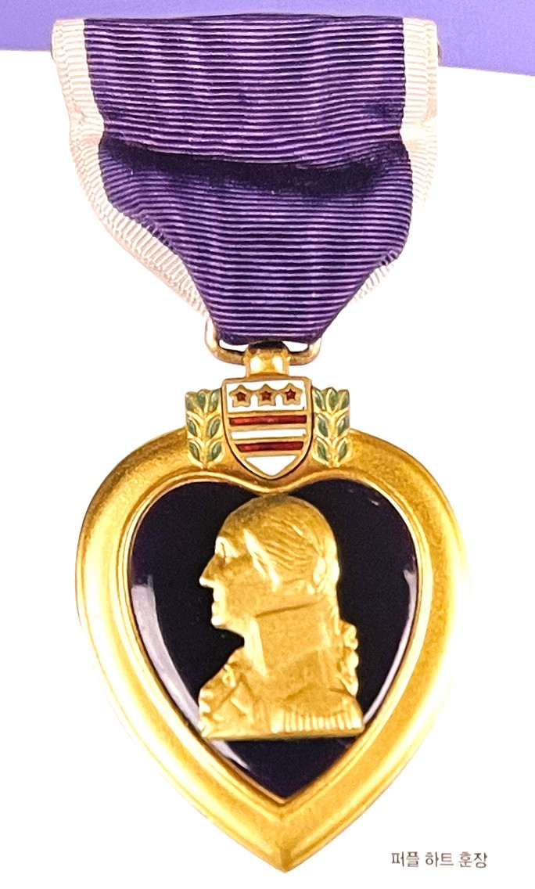퍼플 하트 훈장
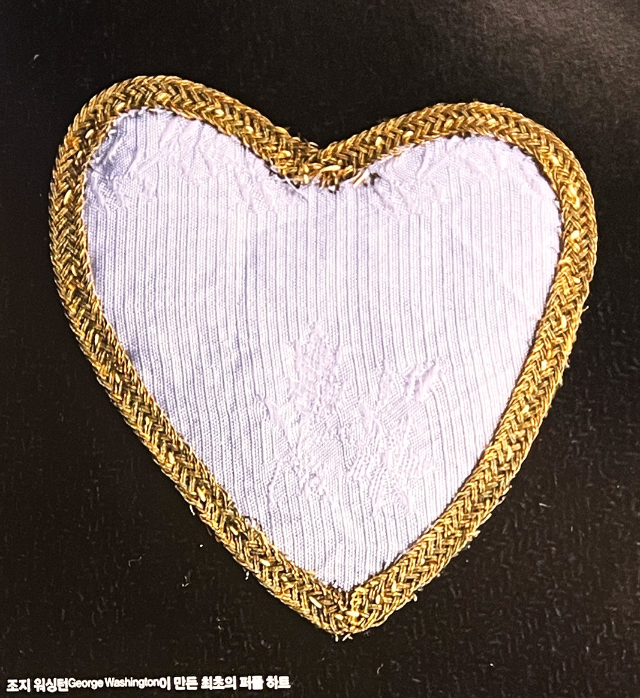조지 워싱턴[George Washington]이 만든 최초의 퍼플 하트
보라색의 작은 역사[3]물질문명의 영향권에서 다소 멀었던 사람들, 이를테면 남아메리카 원시림, 중앙아프리카, 아시아 내륙 등지의 원주민 그리고 중세 서양의 신비주의자들은 보라을 특별히 사랑했다. 신비로운 빛이 난다는 이유에서다. 수많은 다른 문화권에서 영적 셰계, 육체의 세계(빨강), 하늘(파랑)을 아우르는 신비로운 색으로 보라를 꼽아왔다.
종교 의복 문화에서도 발견되는 사실이다. 기독교 문명에서 추기경은 이승과 저승 간의 중재자 역할을 담당한다는 상징에서 보라색 옷을 입는다. 불교에서도 마찬가지로 승려들이 노랑과 함께 보라 예복 차림을 한다.
보라는 특히 중세 교회에서 많이 쓰였따. 중세시대에 지어진 교회의 유리창을 보면 순종, 참회, 그리고 고백을 하는 에배의식을 담은 그림에 등장한다. 추기경의 반지에서도 보라를 찾아 볼 수 있다.
보라는 한때 여성운동의 수단으로서 커다란 붐을 일으켰다. 연보라색의 멜빵바지를 내세운 여성운동은 국경을 넘어 다른 지역까지 널리 퍼져 나간 바 있다.
얼마 전만 해도 갱년기 여신은 연보라색 숄을 둘러 자신이 아직 '늙지 않았다.'는 점을 암시했다. 그것은 풍자적으로 '마지막 노력' 이라는 의미로 통했다.
기독교의 게몽운동이나 평화시위에서 심심치 않게 등장하는 목도리도 연보라색이다. 이것은 '생명을 위한 방향전환'을 목적으로 한 '마지막 노력'이라고 할 수 있다.
술과 마약으로 비극적 종말을 맞은 가수 지미 핸드릭스 Jimi Handrix가 가장 좋아하는 색이었다. 이러한 이유로 환각적 보라색psychedelic purple 이라 불려지기도 했다. 퍼플 핸드purple hand는 LGBTLesbian, Gay, Bisexual, Transgender를 상징하는데 이는 1969년 동성애자 활동단체와 개인권리를 주장하는 사회단체가 샌프란시스코의 바와 클럽에 있는 LGBT사람들을 헐뜯는 뉴스 기사에 대항하여 샌프란시스코 조사관에서 항변하는 사건에서 유래한다.[4]
보라색의 심리학[2]보라를 싫어하는 사람은 체념에 빠져 있다. 그래서 자신의 독립성을 포기하고자 한다. 그렇지만 동시에 자기 중심적인 자아가 손상되는 걸 두려워 한다. 이런 사람은 자신의 위치에서 성실한 태도를 보이며 주위에서 신용도가 높다. 예민한 감성을 합리적으로 통제하고 결정을 내리는 인간이다.[3]
보라는 민감, 변화, 매혹적인 쾌락 등을 의미한다. 색조가 어두워질수록 부동적이면서 강하고 신비로운 느낌을 자아낸다. 반면 밝은 보라는 자극받기 쉽게 상대를 유혹해 마음을 흔드는 힘을 지닌다.[3]
보라는 육제적 욕망과 연관이 깊다. 그래서 지적이고 합리적인 성숙함을 추구하는 사람들은 이 색을 싫어한다. 따라서 패션 등 디자인 관련 부문에서 조심스럽게 사용되어야 한다.[3]
보라는 마력, 요술 등의 이미지를 지닌 신비한 색이다. 물질세계와 영적세계의 경계선을 초월한다. 마치 마법사의 세상이 느껴진다.[3]
보라색은 왕실에서 자주 사용되는 색상이고, 그 영역 안에서 보라색 성향의 사람들은 지도자이다. 영적 지도자의 역할도 보라색의 영향 내에 있다. 문명화된 완성을 추구하는 사람들도 역시 보라색의 영향을 받는다. 가장 높은 수준의 사고를 하고, 육체적인 감각을 사용하지 않은 채 보거나 듣는 예언자들도 여기에 속한다. 보라색 성향의 사람들은 매일 정신적 지각을 사용한다.
보라색 성향의 사람들은 훌륭한 선생님이다. 이들은 정확한 정보라고 해도 완벽할 수 없다는 사실을 제자들에게 가르친다. 성직자, 천부적인 시인, 작가, 화가, 음악가들은 실제로 창조적인 영역의 대가들이며 모두들 이 색과 관련을 맺고 있다. 보라색성향의 사람들은 힘을 지녔으면서도 관대한다. 이 두 성질을 함께 지니는 것이 도전 과제이다. 이 두 성향은 아주 매력적이기는 하지만 보통 공존하기가 어렵다. 보라색 성향의 사람들은 고용되는 것을 좋아하지 않고 자영업을 더 많이 하는 경향이 있다. 보라색을 잘 이용하면 리더십을 기르는 데 도움이 될 것이다.
은색 성향의 사람들은 참을성이 대단해서 ‘길이 멀어지면 마음도 멀어진다.’ 는 말이 통하지 않는다. 그 대신 이들은 당신의 궤도 내에서 밝게 빛난다. 천성적으로 까다로운 성미를 지닌 이들은 스타가 될 자질을 가지고 있으며 아름답다. 이들은 꿈꾸기를 좋아하고, 이들의 이야기는 당신의 마음을 사로잡을 것이다.
보라색을 구현하는 사람들은 인생을 살면서 지도층이 되기 위해 지불해야 할 대가가 희생이라는 점을 이해한다. 이들은 순교자가 되지는 않더라도 다른 사람들의 유익을 위하여 자신을 희생할 수는 있다. 이들이 성공하는 비결은 겸손이다.
보라색 혼합색[2]제비꽃색(violet) : 이 색은 영적 예배를 인도하는 사람들의 색이다. 이들은 보라색의 특징을 많이 지니고 있지만 그리 강렬하지는 않다. 제비꽃색 성향의 사람들은 지성보다는 직감으로 일을 한다. 이들은 미래를 내다 볼 수 있고 제비꽃색 안에 있는 광채와 접촉하기 때문에 신이 주신 영감을 받는다. 이들은 매우 이상적이고 신을 존경하기를 원한다. 이들은 보통 업무상 매우 두각을 나타내기는 하나 상황이 열악해지는 것에 잘 적응하지 못한다. 이 색은 과거 인생으로 돌아가는 일을 위해 사용되기도 한다.
자주색(amethyst) : 이 색의 영향을 받는 사람들은 초자연적인 힘과 깊은 관련이 있다. 자주색은 크림슨 색상과 파란색이 혼합된 색상으로, 이상주의가 주요 특징이다. 크림슨 색 성향은 흙과 관련 있지만, 파란색은 천상의 색이다. 자주색 성향의 사람들은 아이, 병자, 동물처럼 자신을 돌볼 수 없는 사람들을 보호한다. 수도승과 선교사들이 이 색상과 관련이 있다. 자주색의 진동이 이들을 미지의 세계로 보내 인류를 지도하고 돕도록 만든다. 이들은 계산된 사고를 넘어서 행동하며, 진실한 사람과 그렇지 않은 사람을 쉽게 구별할 수 있다.
자두색(plum) : 자두색은 보라색과 진한 금색이 혼합된 색이다. 이 색상의 기질을 지닌 사람들은 이미 성공한 사람들이기 때문에 무언가를 성취하거나 달성하기 위해 분투하지 않는다. 이들은 자신의 상황을 알고 있고 지식을 충분히 이용하는 특권 계층의 위엄을 지니고 있다. 하지만 자신의 인기에 매료되어서 잘못된 자신감이나 다른 사람보다 자신이 더 고귀하다는 헛된 망상에 빠지지 않도록 유의해야 한다.
라일락색(lilac) : 이 색상의 사람들은 자기 찬양이 결코 부족하지 않으나, 자칫 자만으로 빠지기 쉽다. 이들은 거울로 자신의 모습을 바라볼 때면 아무런 문제가 발생하지 않으나, 주위의 사람들에 대해서는 문제 삼을 때가 많다. 이 사람들은 신비적인 아름다운, 로맨스, 마술 등을 좋아한다. 라일락의 성향을 지닌 사람들은 너무 빨리 성장해버려서 유년시절을 놓쳤음을 의미할 수도 있다. 라일락 성향의 사람들은 미성숙함과 젊음을 보일수도 있지만 이들은 또한 대단한 치유력도 지니고 있다.
<그림1>제비꽃색은 신생아의 황달 현상을 없애는 데 도움을 준다.
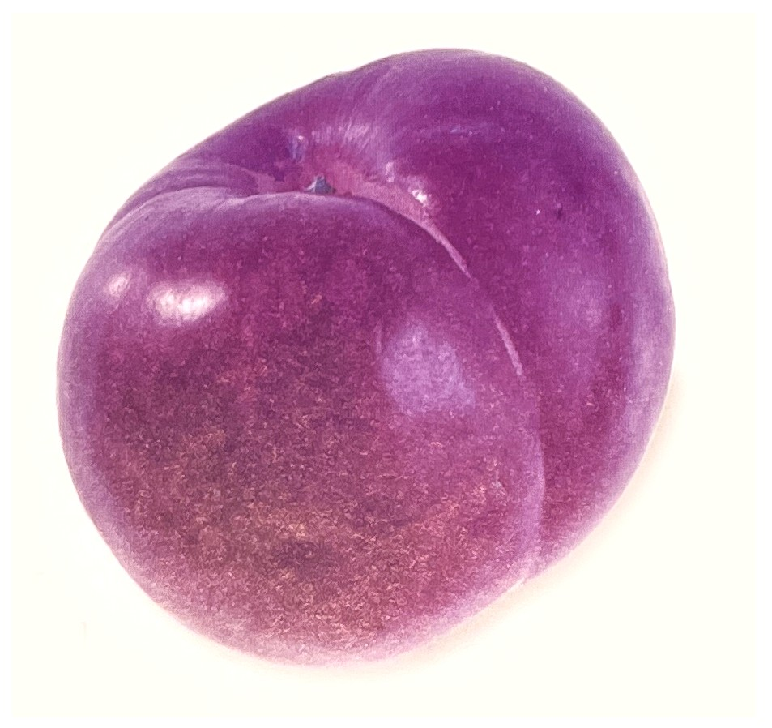<그림2> 보라색 자두의 성향을 띠는 사람은 무언가를 달성하려고 노력할 필요가 없다. 이들은 이미 필요한 것을 다 가지고 있다.
보라색으로 표현된 패션[4]라일락, 라벤더와 같은 밝은 톤의 보라는 분홍과 같이 부드러운 느낌으로 여성들에게 선호되는 색으로 분홍에 비해 더욱 성숙한 이미지를 전달한다. 짙은 보래계열은 장엄하고 위엄이 있는 색으로 우아함elegant을 연출할 수 있는 대표적인 색이다. 중간 톤은 대중적으로 많이 사용하지 않으며 남성에게는 동성애적인 이미지를, 여성에게는 다른 색과의 조화와 피부톤과의 어울림이 어려워 이에 대한 호감도가 낮은 편이다.
색상환에서 보라는 붉은 빛이 도는 퍼플, 와인계열의 보라와 푸른빛이 부각되는 로얄 퍼플계열로 나눌수 있다. 푸른빛의 보라는 붉은빛 보다 마술적이고 기묘하며 비밀스러운 이미지를 준다. 반면 붉은 보라 계열인 퍼플, 와인ㄱ메열은 대중적으로 더 친근하며 열정과 고전적 이미지를 연출한다.
보라는 일상복일 경우 부담스러울 수 있어 회색이나 검정 등의 무채색 계열과 같이 사용하면 우아하고 현대적인 이미지를 연출할 수 있어 예식이나 사교모임을 위한 포멀웨어에 사용할 경우에는 보다 강렬하고 매력적인 스타일을 보일 수 있다.
자주색/보라색 인테리어[4]자주색/보라색은 역사적으로 왕족의 색이며 여러 색들 중 가장 고귀하고 신비로운 영적인 이미지를 나타낸다. 퍼플은 가지색과 같은 붉은 톤에서 푸른 톤의 퍼플에 이르는 모든 색을 통칭하는 말이다. 다양한 색조에서 보라는 미묘하며 유연한 중성색으로 될 수 있는데 그 농도에 따라 소녀들이 좋아하는 부드러운 라벤더가 된다.
보라색은 다른 색과 함께 연출하기에는 다소 까다로운 색이다. 베이지나 브라운 계열, 또는 회색 계열과 함께 사용하여 보라의 강한 이미지를 중화시킨다. 이렇게 하면 좀더 안정감있는 공간을 만들 수 있으며, 버건디-자주-보라-로얄블루로 이어지는 넓은 범위의 파랑과 빨강의 혼합으로 신비롭고 마력적인 이미지를 연출할 수도 있다.
[참고문헌]
[1] 컬러, 그 비밀스러운 언어 COLOR, 조앤 액스터트, 아리엘 엑스터트, 신기라 옮김, 시그마 북스, 2014.9.10.
[2] 몸과 마음을 치료하는 색채, 릴리안 베르너 본즈, 번역 한창환, 도서출판 국제, 2008.1,10.
[3] 색의 힘, 하랄드 브램, 번역 이재만, 일진사, 2010.5.20.
[4] 색채 기획을 위한 색이야기, 김문여 김봉섭 안희정, 교학연구사, 2011. 6.30.
[5] 좋아 보이는 것들의 비밀 편집&그리드, 이민기 지음, 길벗, 2015.5.1.
[6] 색채 디자인 교과서, 문은배 지음, 길벗, 2010.12.28
[7] 색채의 역사-미술, 과학 그리고 상징, 존 게이지 지음, 박수진 한재현 옮김, (주)사회 평론, 2011. 5.11
....
....
....
....